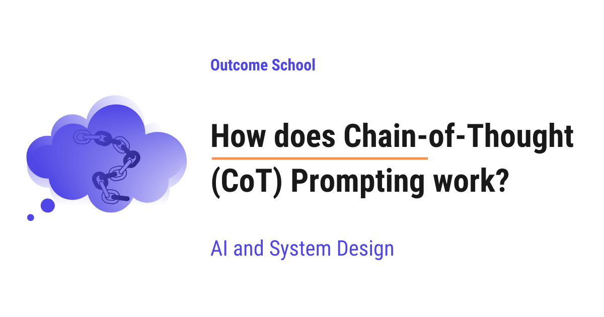
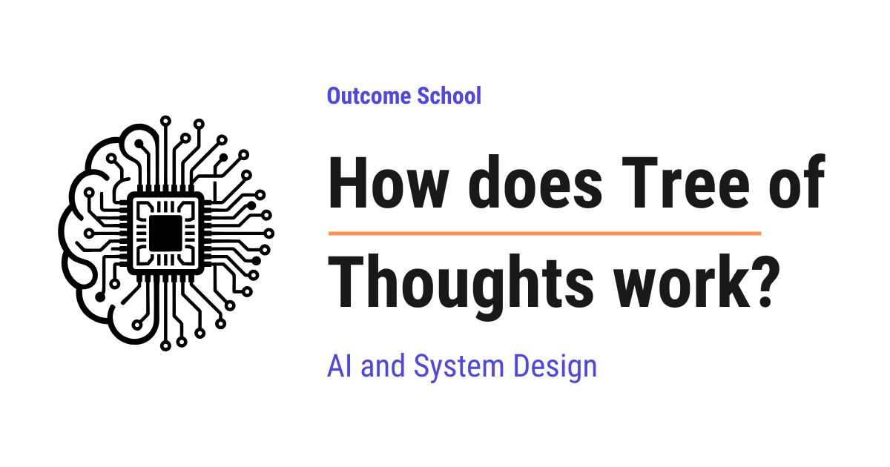
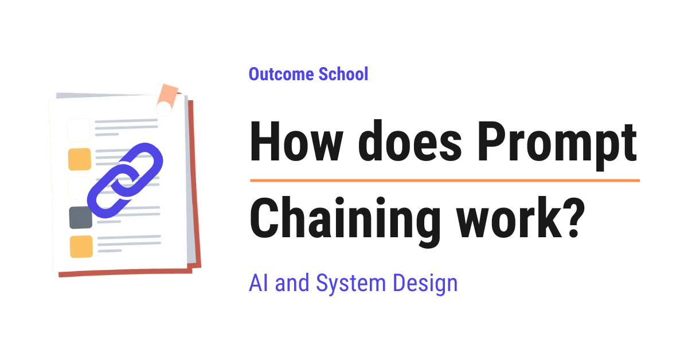
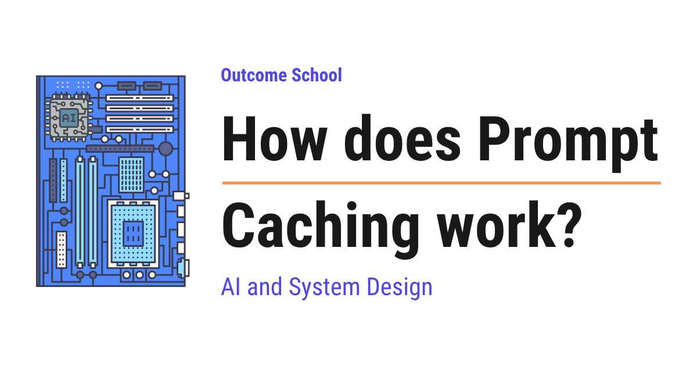
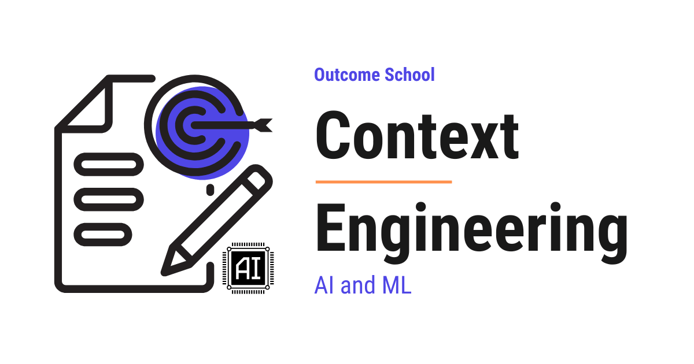
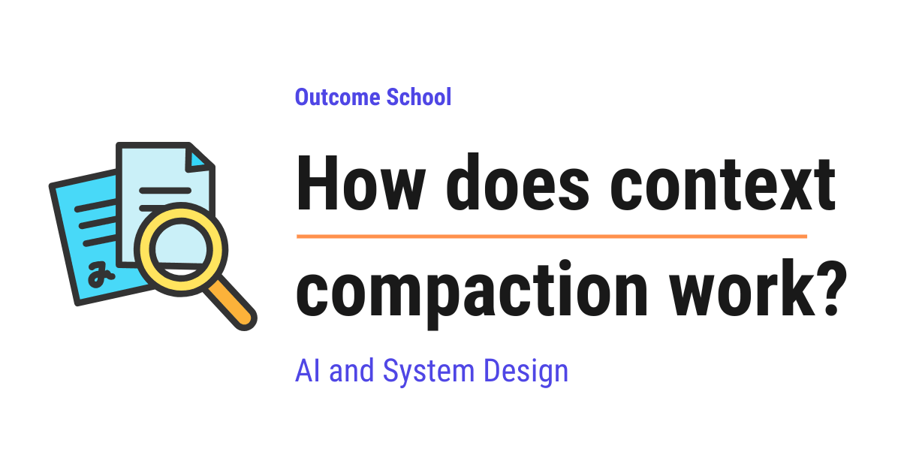

AI Engineering Course
Module 8
Prompt Engineering and Context Engineering
Personal offline study copy. Content © Outcome School / Amit Shekhar. Not for redistribution. See study/NOTICE.md.
Contents
Module 8
Prompt Engineering and Context Engineering
In this module, we will learn how to talk to an LLM so that it gives better answers, and how to manage everything that goes into its context window.
By the end of this module, we will be able to design prompts and contexts that make an LLM reliable, fast, and cheap.
Lesson 8.1
How does Chain-of-Thought (CoT) Prompting work?

Chain-of-Thought (CoT) Prompting is a technique where we ask the model to write out its reasoning steps before giving the final answer. In simple words, we ask the model to think out loud first, and this makes its answers more accurate.
In this blog, we will learn about how Chain-of-Thought (CoT) Prompting works. We will also see why a model that jumps straight to the answer often gets it wrong, how making it reason step by step fixes this, the difference between zero-shot and few-shot CoT, and where this technique is truly useful.
We will cover the following:
- What is a prompt?
- What is an LLM?
- The problem: when the model jumps straight to the answer
- What is Chain-of-Thought (CoT) Prompting?
- A simple example without CoT and with CoT
- Zero-shot CoT vs Few-shot CoT
- A step-by-step walkthrough of a reasoning chain
- Why does Chain-of-Thought Prompting work?
- Where Chain-of-Thought Prompting is useful
- Things to keep in mind
Let's get started.
What is a prompt?
Before jumping into Chain-of-Thought Prompting, we must know what a prompt is.
A prompt is the text instruction we give to an AI model. In simple words, a prompt is the question or the task we type in.
Let's say we open a chat-based AI tool and type, "What is the capital of France?". That sentence is the prompt. The model reads the prompt and gives us an answer.
So, a prompt is just our way of telling the model what we want.
What is an LLM ?
Now, let's understand the kind of model we are talking about.
LLM = Large Language Model.
In simple words, an LLM is a model that has read a huge amount of text and learned to predict the next word. That is the most important idea here.
Let's say we type, "The sky is". The model has seen this kind of sentence many times, so it predicts the next word as "blue". It keeps doing this, one word after another, until the full answer is formed.
So, an LLM builds its answer word by word. It does not see the whole answer at once. It writes the answer the same way we speak a sentence, one word at a time.
This one-word-at-a-time way of generating text is called autoregression. We have a detailed blog on autoregressive models that explains it in depth.
This single idea will help us understand why Chain-of-Thought Prompting works so well.
The problem: when the model jumps straight to the answer
Consider a simple math word problem.
A shop has 12 apples. It sells 5 apples in the morning and buys 8 more in the evening. How many apples does the shop have now?
The correct answer is 15. We get this by doing 12 - 5 = 7, and then 7 + 8 = 15.
Now, suppose we just ask the model for the answer directly. The model tries to predict the final number immediately. It has not worked out the small steps. For an easy problem, it may get it right. But for harder problems, it often jumps to a wrong number.
Why does this happen? Because we forced the model to produce the answer in one shot. We did not give it room to think step by step.
The model writes word by word, so if it commits to a final number too early, it has no chance to correct itself.
This is the core problem. So, here comes Chain-of-Thought Prompting to the rescue.
What is Chain-of-Thought (CoT) Prompting?
Chain-of-Thought (CoT) Prompting is a technique where we ask the model to write out its reasoning steps before giving the final answer.
In simple words, instead of asking for the answer directly, we ask the model to "think out loud" first.
Let's decompose the name to make it clearer.
Chain-of-Thought = Chain + of + Thought.
A thought is one small reasoning step. A chain is many small steps linked together, one after another. So a Chain-of-Thought is a series of small reasoning steps that lead us to the final answer.
Let's say we are solving the apple problem. The thoughts in the chain are like this:
- Thought 1: Start with 12 apples.
- Thought 2: Sell 5, so 12 - 5 = 7 apples.
- Thought 3: Buy 8 more, so 7 + 8 = 15 apples.
- Final answer: 15.
Here, we can see that each thought builds on the previous one. This is the chain. This is how Chain-of-Thought Prompting guides the model.
Let's visualize the difference between the two ways as below:
Without CoT (jump straight to the answer)
Question --> [ guess the final number ] --> Answer (often wrong)
With CoT (think step by step)
Question
|
v
Thought 1: start with 12 apples
|
v
Thought 2: 12 - 5 = 7 apples
|
v
Thought 3: 7 + 8 = 15 apples
|
v
Final answer: 15 (more reliable)
Here, we can see that without CoT the model goes from the question straight to the answer in one jump. With CoT the question flows through small thoughts, one after another, and only the last thought gives the final answer.
A simple example without CoT and with CoT
The best way to learn this is by taking an example.
First, let's see a prompt without Chain-of-Thought, as below:
Q: A shop has 12 apples. It sells 5 in the morning and buys 8 in the evening.
How many apples does it have now? Give only the final number.
Here, we have told the model to give only the final number. The model is forced to jump straight to the answer with no thinking space. On harder problems, this often leads to mistakes.
Now, let's add Chain-of-Thought to the same prompt, as below:
Q: A shop has 12 apples. It sells 5 in the morning and buys 8 in the evening.
How many apples does it have now? Let's think step by step.
Here, we have added one simple line at the end: "Let's think step by step." This small line is the trigger. It tells the model to write out its reasoning before the answer.
Now the model responds like below:
We start with 12 apples.
After selling 5, we have 12 - 5 = 7 apples.
After buying 8 more, we have 7 + 8 = 15 apples.
So, the final answer is 15.
Here, we can notice that the model first writes the steps and only then gives the final answer. The reasoning is laid out clearly. This is Chain-of-Thought Prompting in action.
Problem Solved!
Zero-shot CoT vs Few-shot CoT
Now, let's learn that there are two common ways to do Chain-of-Thought Prompting.
The first one is Zero-shot CoT.
In simple words, "zero-shot" means we give zero examples. We just add a line like "Let's think step by step" and the model starts reasoning on its own. This is the easiest way, and we already saw it above.
Let's see the Zero-shot CoT prompt again, as below:
Q: If a train travels 60 km in 1 hour, how far does it travel in 3 hours?
Let's think step by step.
Here, we have given no example at all. We only added the magic line "Let's think step by step." The model figures out the steps by itself.
The second one is Few-shot CoT.
In simple words, "few-shot" means we give a few examples first. We show the model one or two solved problems with full reasoning. Then we ask our real question. The model copies the same step-by-step style.
Let's see a Few-shot CoT prompt, as below:
Q: A box has 4 pens. We add 3 more pens. How many pens now?
A: We start with 4 pens. We add 3, so 4 + 3 = 7. The answer is 7.
Q: A jar has 10 candies. We eat 6. How many candies now?
A: We start with 10 candies. We eat 6, so 10 - 6 = 4. The answer is 4.
Q: A shelf has 8 books. We add 5 more. How many books now?
A:
Here, we have given two solved examples first. Each example shows the reasoning, not just the answer. After seeing this pattern, the model answers the third question in the same step-by-step way. It will write, "We start with 8 books. We add 5, so 8 + 5 = 13. The answer is 13."
So, Zero-shot CoT uses a simple instruction, and Few-shot CoT uses solved examples to teach the pattern.
Let me tabulate the differences between Zero-shot CoT and Few-shot CoT for your better understanding.
| Point | Zero-shot CoT | Few-shot CoT |
|---|---|---|
| Examples given | None | A few solved examples |
| How reasoning is triggered | A line like "Let's think step by step" | Showing solved examples with steps |
| Prompt length | Short | Longer |
| Effort to write | Very less | More, because we write examples |
| Best for | Quick, common problems | Harder or unusual problems |
A step-by-step walkthrough of a reasoning chain
Now, let's take a slightly bigger problem and walk through the chain step by step.
Suppose a class has 30 students. 12 of them play football. Half of the remaining students play cricket. How many students play cricket?
Let's follow the chain.
Step 1: Start with 30 students in total.
Step 2: 12 students play football. So the remaining students are 30 - 12 = 18.
Step 3: Half of the remaining 18 students play cricket. So 18 divided by 2 = 9.
Step 4: So, the final answer is 9 students play cricket.
We can picture how the result of each step flows into the next as below:
Step 1 Step 2 Step 3 Step 4
+--------+ +-------------+ +-------------+ +--------+
| total | ---> | remaining | --> | cricket | --> | final |
| = 30 | | = 30 - 12 | | = 18 / 2 | | answer |
| | | = 18 | | = 9 | | = 9 |
+--------+ +-------------+ +-------------+ +--------+
^ ^
| |
uses total from uses remaining from
Step 1 Step 2
Here, we can see that each step uses the result of the step before it. Step 2 needs the total from Step 1. Step 3 needs the remaining count from Step 2. This linking of steps is exactly why we call it a chain.
If the model tried to guess "9" in one shot, it could easily slip. But by working through each step, it stays on track. This is how Chain-of-Thought Prompting reduces mistakes.
Why does Chain-of-Thought Prompting work?
Now, the next big question is: why does this simple trick work so well?
Remember the idea from earlier. An LLM writes its answer one word at a time, and each new word depends on the words written before it.
When the model writes out its reasoning, those reasoning words become part of what it reads next. So the model is now building its final answer on top of correct, visible steps, instead of guessing from nothing.
Let's say we are doing a hard calculation in our head. It is easy to make a mistake. But if we write each step on paper, we are far more likely to get it right. Chain-of-Thought Prompting gives the model that same "paper to write on".
Another reason is this. Breaking a big problem into small steps makes each step easy. The model is good at small, simple steps. By chaining many easy steps, it can solve a problem that looked hard as a whole.
So, the model is not getting smarter. We are just giving it room to think, and that too in a structured way. That's the beauty of Chain-of-Thought Prompting.
Some newer models are trained to produce these reasoning steps on their own, without us adding any special prompt. We have a detailed blog on large reasoning models that explains how this works.
Where Chain-of-Thought Prompting is useful
Now, we know how it works. Let's see where we can use it.
- Math word problems, where we need many small calculations.
- Logic puzzles, where one wrong step breaks the whole answer.
- Multi-step questions, where the answer depends on earlier facts.
- Decision-making tasks, where we must weigh a few options before choosing.
- Reading comprehension, where we must connect different parts of a passage.
In all of these, the answer is not a single fact. It needs several steps. Chain-of-Thought Prompting fits these cases perfectly.
When one wrong first step can break the whole answer, we can go one step further and let the model try many paths, judge them, and go back when a path fails. We have a detailed blog on Tree of Thoughts that explains this step by step.
Things to keep in mind
Now, let's discuss a few important points before we close.
- Chain-of-Thought Prompting helps most on hard, multi-step problems. For very simple questions like "What is the capital of France?", we do not need it. The answer is a single fact, so there is nothing to break into steps.
- The reasoning the model writes is helpful, but it is not always perfect. The model can write steps that look correct but still reach a wrong answer. So, for important tasks, we must check the steps ourselves and not blindly trust them.
- Writing out the steps means the model produces more text. More text takes a little more time and cost. For most tasks this is a fair trade for better answers, but we must keep it in mind based on our use case.
So, the idea is simple. Instead of asking the model for the answer directly, we ask it to think step by step. The model writes a chain of small thoughts, and each thought leads to the next, until we reach a reliable final answer.
This is how Chain-of-Thought Prompting works, and this is why such a small change in our prompt can make such a big difference.
Frequently Asked Questions
Does Chain-of-Thought Prompting make the model smarter?
No. The model is not getting smarter. We are just giving it room to think in a structured way. The reasoning words it writes become part of what it reads next, so it builds the final answer on top of visible steps instead of guessing from nothing.
Should we use Chain-of-Thought Prompting for simple questions?
No. It helps most on hard, multi-step problems. For a simple question like "What is the capital of France?", the answer is a single fact, so there is nothing to break into steps. It fits math word problems, logic puzzles, and multi-step questions much better.
Can we fully trust the reasoning steps the model writes?
No. The reasoning is helpful, but it is not always perfect. The model can write steps that look correct but still reach a wrong answer. So, for important tasks, we must check the steps ourselves and not blindly trust them.
Does Chain-of-Thought Prompting increase time and cost?
Yes. Writing out the steps means the model produces more text, and more text takes a little more time and cost. For most tasks, this is a fair trade for better answers, but we must keep it in mind based on our use case.
Do all models need a special prompt to reason step by step?
No. Some newer models are trained to produce these reasoning steps on their own, without us adding any special prompt. For other models, a simple line like "Let's think step by step" or a few solved examples triggers the reasoning.
Lesson 8.2
How does Tree of Thoughts work?

Tree of Thoughts is a way of making an LLM solve a hard problem by trying many possible next steps, checking which ones look good, and going deeper only on the good ones, just like exploring the branches of a tree.
In this blog, we will learn about how Tree of Thoughts works. We will also see why a normal step-by-step answer fails on hard problems, what a "thought" means here, how the LLM generates and judges many thoughts, how a search algorithm walks through the tree and goes back when a path fails, a full walkthrough on the Game of 24, and where it works well and where it fails.
We will cover the following:
- How does an LLM answer?
- What is Chain of Thought?
- The problem with Chain of Thought
- What is Tree of Thoughts?
- What is a thought?
- Step 1: Breaking the problem into thoughts
- Step 2: Generating many thoughts
- Step 3: Judging the thoughts
- Step 4: Searching through the tree
- A complete example: the Game of 24
- A simple code sketch of Tree of Thoughts
- Chain of Thought vs Tree of Thoughts
- Where Tree of Thoughts works well and where it fails
Let's get started.
How does an LLM answer?
Before jumping into Tree of Thoughts, we must know how an LLM gives an answer.
An LLM writes text one small piece at a time. The small piece of text that an LLM writes at a time is called a token. A token is a word or a part of a word. For the sake of understanding, we can think of a token as one word.
An LLM writes its answer from left to right, one token after another. Once it has written a token, it does not go back and change it. It just keeps moving forward.
Let's say we ask a friend to solve a puzzle, but with one strict rule: they must speak every step out loud, and they can never say "wait, let me try another way". If they take one wrong step early, the whole answer goes wrong. This is how a normal LLM answers.
What is Chain of Thought?
Now, let's understand the idea that came before Tree of Thoughts.
Chain of Thought is a way of asking an LLM to write down its reasoning step by step before giving the final answer.
Suppose we ask: "A shop has 23 apples. It sells 20 and then buys 6 more. How many apples does it have now?"
Without Chain of Thought, the LLM jumps straight to an answer, and sometimes that answer is wrong.
With Chain of Thought, we add a line like "Let's think step by step." Now, the LLM writes:
The shop starts with 23 apples.
It sells 20, so 23 - 20 = 3 apples are left.
It buys 6 more, so 3 + 6 = 9 apples.
The answer is 9.
Here, we can see that the LLM writes small steps one after another, like the links of a chain. Each step builds on the previous one. This trick makes LLMs much better at maths and logic problems.
We have a detailed blog on Chain-of-Thought Prompting that explains this in depth.
The problem with Chain of Thought
Chain of Thought is still one single chain. The LLM picks one first step, then one second step, then one third step, and never looks back.
Start
↓
Step 1
↓
Step 2
↓
Step 3
↓
Answer
If Step 1 is a bad choice, every step after it is built on a bad foundation. The LLM has no way to say, "This path is not working, let me go back and try a different Step 1."
Think about how we humans solve a hard puzzle, like a Sudoku or a maze. We try something. If it leads to a dead end, we go back and try something else. We also compare a few options in our head before picking one. We explore.
Chain of Thought does not explore. It just walks in a straight line.
So, the question is: how can we make an LLM explore many paths, check them, and go back when one path fails?
So, here comes Tree of Thoughts to the rescue.
What is Tree of Thoughts?
Tree of Thoughts is a method where an LLM builds many possible reasoning paths in the shape of a tree, judges how promising each path is, and uses a search to keep the good paths and drop the bad ones.
It was introduced in 2023 in a research paper named "Tree of Thoughts: Deliberate Problem Solving with Large Language Models" by Shunyu Yao and others from Princeton University and Google DeepMind.
Here, the thoughts are small steps of reasoning, and they are arranged like the branches of a tree. One starting point splits into many branches, and each branch splits again.
It looks like below:
[Problem]
↓
+--------------+--------------+
↓ ↓ ↓
[Thought A] [Thought B] [Thought C]
↓ ↓ ↓
+----+----+ [B1] dropped
↓ ↓ ↓
[A1] [A2] [B2]
↓ ↓
[Answer] dropped
Here, we can notice that the LLM did not commit to one path. It tried three first thoughts. Path C looked hopeless, so it was dropped. Path A2 also failed. Path A1 reached the answer.
Tree of Thoughts is built from four parts:
- Breaking the problem into thoughts
- Generating many thoughts
- Judging the thoughts
- Searching through the tree
We will learn about each of them in detail.
What is a thought?
Before going to the steps, we must understand what a "thought" means here.
A thought is one meaningful middle step towards solving the problem.
It is bigger than a single token, but smaller than the whole answer. The size of a thought depends on the problem:
- In a maths puzzle, one thought can be one equation, like
4 + 9 = 13. - In a crossword, one thought can be one word filled into the grid.
- In creative writing, one thought can be a short plan of the story.
A state is everything we have so far: the original problem plus all the thoughts on the current path. Each box in the tree above is a state.
Now, let's move to the four steps.
Step 1: Breaking the problem into thoughts
First, we need to decide how to cut the problem into thought-sized steps.
The size matters a lot. If a thought is too small, like one word, the LLM cannot judge whether it is good or bad. If a thought is too big, like the whole answer, the LLM cannot create many different options for it.
So, we pick a size where the LLM can create a few different options and also judge them. This choice is made by us, the people designing the system, based on our use case.
Step 2: Generating many thoughts
Then, at every state, we ask the LLM to create a few possible next thoughts. This part is called the thought generator.
There are two common ways to do it:
- Sample: We ask the LLM the same question a few times, separately. Each time, it gives a slightly different next thought. This works well when there are many open choices, like in creative writing.
- Propose: We ask the LLM once to list several different next thoughts in one answer. This works well when the choices are small and limited, like in a maths puzzle, because it avoids getting the same thought again and again.
Let's say we have a small maths puzzle: we get the numbers 4, 9, 10, 13, and we must combine them to make 24. We will see this puzzle in detail later. For the first step, the LLM can propose:
4 + 9 = 13 (left: 10, 13, 13)
10 - 4 = 6 (left: 6, 9, 13)
13 - 9 = 4 (left: 4, 4, 10)
Here, each line is one candidate thought, and each one opens a new branch in the tree.
Step 3: Judging the thoughts
Now, we have many branches. But we cannot follow all of them, because the tree grows very fast. We need to know which branches look promising.
This part is called the state evaluator. The same LLM does the judging. We simply ask it to think about each state and give an opinion.
We have a detailed blog on LLM as a Judge that explains how an LLM can grade the work of an LLM.
There are two common ways:
- Value: We show the LLM one state and ask it to rate it. For example, in the maths puzzle, the LLM labels each state as sure, likely, or impossible to reach the goal. These labels are turned into scores.
- Vote: We show the LLM all the states together and ask, "Which one is the most promising?". The LLM votes for one. We repeat the vote a few times and count.
Let's say the state is "left: 4, 4, 10". The LLM can reason like below:
10 - 4 = 6, 6 * 4 = 24. We can reach 24.
Judgement: sure
And for a state like "left: 1, 1, 2", it can reason:
The biggest we can make is (1 + 1) * 2 = 4. Too small to reach 24.
Judgement: impossible
This is like a chess player who looks at a board position and says, "This looks winning" or "This looks lost", without playing the whole game till the end.
To make the judgement more stable, we can ask the LLM the same rating question a few times and add up the scores. A "sure" gets a big score, a "likely" gets a small score, and an "impossible" gets almost zero.
The judgement does not need to be perfect. It just needs to be good enough to guide the search.
Step 4: Searching through the tree
Finally, we need a plan for walking through the tree. This is the search algorithm. The paper uses two well-known ones.
Breadth-First Search (BFS)
Breadth-First Search goes level by level. At each level, it keeps only the best few states and drops the rest.
The number of states we keep at each level is called the breadth limit, and we write it as b. Let's say b = 5.
Level 1: generate many thoughts, judge, keep best 5
↓
Level 2: from those 5, generate many, judge, keep best 5
↓
Level 3: from those 5, generate many, judge, keep best 5
It is like a talent show with rounds. In every round, many people perform, and only the top 5 go to the next round.
BFS works well when the number of steps is small and fixed, like our maths puzzle, which always needs exactly 3 steps.
Depth-First Search (DFS)
Depth-First Search goes deep along the most promising path first. If a state is judged as hopeless, it goes back to the previous state and tries the next option.
Going back like this is called backtracking.
Problem
↓
A
↓
+-----+-----+
↓ ↓
A1 A2
↓ ↓
impossible A2a
back to A ↓
Answer
It is like exploring a maze. We walk down one corridor as far as we can. If we hit a wall, we come back to the last turning and take another corridor.
DFS works well when the path is long and there are many steps, like filling a crossword. In fact, the paper used DFS for small 5x5 crossword puzzles, where each thought fills one word and a word that breaks the grid sends the search back.
Chain of Thought can never go back. Tree of Thoughts can.
Now that we have learned about all the four parts, it's time to see them working together.
A complete example: the Game of 24
The best way to learn this is by taking an example.
The Game of 24 is a maths puzzle. We get four numbers. We must use each number exactly once, with +, -, *, and /, to make 24.
Let's take the numbers 4, 9, 10, 13.
Step 1: We break the problem into thoughts. Each thought is one equation that combines two numbers. So, we need exactly 3 thoughts to go from 4 numbers down to 1 number.
Step 2: We generate at level 1. The LLM proposes a few first moves:
(a) 4 + 9 = 13 left: 10, 13, 13
(b) 10 - 4 = 6 left: 6, 9, 13
(c) 13 - 9 = 4 left: 4, 4, 10
(d) 9 * 4 = 36 left: 10, 13, 36
Step 3: We judge level 1. The LLM rates each state:
(a) 10, 13, 13 -> impossible
(b) 6, 9, 13 -> sure
(c) 4, 4, 10 -> sure
(d) 10, 13, 36 -> impossible
Step 4: We search. With BFS, we keep the best ones, which are (c) and (b), and drop (a) and (d).
Level 2: From (c) "4, 4, 10", the LLM proposes:
10 - 4 = 6 left: 4, 6 -> sure (4 * 6 = 24)
4 + 4 = 8 left: 8, 10 -> impossible
We keep "4, 6". The state (b) is also expanded in the same way, but just for the sake of understanding, we are following only the path of (c) here.
Level 3: From "4, 6", the LLM proposes 4 * 6 = 24. We reached 24.
Now, we just read the path back from the root:
13 - 9 = 4
10 - 4 = 6
4 * 6 = 24
Means, (10 - (13 - 9)) * 4 = 24. It works perfectly.
In the paper, GPT-4 with Chain of Thought solved only 4% of these puzzles. GPT-4 with Tree of Thoughts, keeping the best 5 states at each level, solved 74%.
With Chain of Thought, if the first equation was (a), the whole answer failed. With Tree of Thoughts, (a) was judged as impossible and dropped early.
A simple code sketch of Tree of Thoughts
Now, let's see the code for a very simple version of Tree of Thoughts with BFS. Here, llm_propose and llm_judge are helper functions that send a prompt to an LLM and read back its answer. We are hiding their details for the sake of understanding.
def tree_of_thoughts(problem, steps=3, keep=5):
states = [problem] # level 0: only the problem
for level in range(steps):
candidates = []
for state in states:
for thought in llm_propose(state): # Step 2: generate
candidates.append(state + "\n" + thought)
scored = [(llm_judge(c), c) for c in candidates] # Step 3: judge
scored.sort(reverse=True) # best first
states = [c for score, c in scored[:keep]] # Step 4: keep best
return states[0] # the best final path
Here, we have:
statesholds the paths we are currently keeping. At the start, it only has the problem.- In each level, for every kept state, we ask the LLM to propose new thoughts and attach each one to the path. This is the thought generator.
llm_judgegives a score to every new path. For example, "sure" can become a high score and "impossible" a very low score. This is the state evaluator.- We sort by score and keep only the top
keeppaths. This is the BFS search with breadth limitb. - After the last level, we return the best path.
This is how the four parts fit together in a few lines of code.
Chain of Thought vs Tree of Thoughts
Let me tabulate the differences between Chain of Thought and Tree of Thoughts for your better understanding.
| Point | Chain of Thought | Tree of Thoughts |
|---|---|---|
| Shape of reasoning | One straight chain | A tree with many branches |
| Options at each step | One | Many |
| Judges its own steps | No | Yes |
| Can go back after a mistake | No | Yes, with backtracking |
| Number of LLM calls | One | Many, often dozens or more |
| Cost and time | Low | High |
| Best for | Simple, step-by-step problems | Hard problems that need trying and checking |
Where Tree of Thoughts works well and where it fails
Advantages:
- It solves problems where the first move matters a lot, like puzzles, planning, and crosswords.
- It can recover from a bad step by dropping it or going back.
- It needs no new training. It works with any existing LLM.
- We can tune it: change the breadth limit, the size of a thought, or the search algorithm.
Disadvantages:
- It is expensive. One question can need many LLM calls, so it costs more money and takes more time.
- The judging step can be wrong. If the LLM rates a good path as "impossible", that path is dropped forever.
- We must design the thought size, the prompts, and the search for each new type of problem.
- For easy questions, it is a waste. Chain of Thought already does the job.
Note: Newer reasoning models are trained to explore, check, and go back inside their own long chain of reasoning. But the idea of Tree of Thoughts is still very useful when we build our own agents and want clear control over how many paths are tried and how they are judged.
Now, we must have understood how Tree of Thoughts works.
Frequently Asked Questions
Does Tree of Thoughts need a new model or extra training?
No. Tree of Thoughts needs no new training and works with any existing LLM. The same LLM proposes the next thoughts and also judges them. We only design the thought size, the prompts, and the search algorithm around it, and we can tune the breadth limit or the search to fit our use case.
Who introduced Tree of Thoughts?
Tree of Thoughts was introduced in 2023 in a research paper named "Tree of Thoughts: Deliberate Problem Solving with Large Language Models". It was written by Shunyu Yao and others from Princeton University and Google DeepMind. The paper tested it on puzzles like the Game of 24 and small 5x5 crosswords.
Is Tree of Thoughts more expensive than Chain of Thought?
Yes. Chain of Thought needs one LLM call, while Tree of Thoughts often needs dozens of calls or more for a single question, because it generates and judges many thoughts. So, it costs more money and takes more time. For easy questions, Chain of Thought already does the job.
What happens if the LLM judges a good path wrongly?
That path is dropped forever. If the LLM rates a good path as "impossible", the search never comes back to it. To make the judgement more stable, we can ask the same rating question a few times and add up the scores. The judgement does not need to be perfect, just good enough to guide the search.
Do reasoning models make Tree of Thoughts unnecessary?
No. Newer reasoning models are trained to explore, check, and go back inside their own long chain of reasoning. But Tree of Thoughts is still very useful when we build our own agents and want clear control over how many paths are tried and how they are judged.
Lesson 8.3
How does Prompt Chaining work?

Prompt Chaining is a way of breaking one big task into smaller prompts, where the output of one prompt becomes the input of the next prompt.
In this blog, we will learn about how Prompt Chaining works. We will also see why we need it, how it works step by step by passing the output of one prompt into the next, and where it is used in the real world to solve bigger tasks reliably.
We will cover the following:
- What is a prompt?
- What is Prompt Chaining?
- Why do we need Prompt Chaining?
- How does Prompt Chaining work step by step?
- A real example of Prompt Chaining
- Code example of Prompt Chaining
- Common patterns in Prompt Chaining
- Advantages of Prompt Chaining
- Things to take care of while using Prompt Chaining
- When to use Prompt Chaining
Let's get started.
What is a prompt?
Before jumping into Prompt Chaining, we must know what a prompt is.
A prompt is the instruction or question that we give to an AI model.
In simple words, a prompt is what we type to tell the AI what we want.
Let's say we open an AI chat tool and type "Write a short poem about the rain." That sentence is the prompt. The AI reads our prompt and gives us an answer back. That answer is called the response.
So, a prompt goes in, and a response comes out. This is the simplest way to talk to an AI model.
Now, we have understood what a prompt is. Now, it's time to learn about Prompt Chaining.
What is Prompt Chaining?
Prompt Chaining is a way of breaking one big task into smaller prompts, where the output of one prompt becomes the input of the next prompt.
Let's decompose the term to understand it better.
Prompt Chaining = Prompt + Chaining
Here, "Prompt" is the instruction we give to the AI. And "Chaining" means joining things one after another, like the links of a chain.
In simple words, instead of asking the AI to do everything in one single big prompt, we ask it in small steps. We take the answer from the first step and feed it into the second step. Then we take the answer from the second step and feed it into the third step, and so on.
So, each step depends on the answer of the step before it. The steps are connected like a chain. That is why we call it Prompt Chaining.
Do not confuse this with Chain-of-Thought (CoT) Prompting - there, a single model reasons step by step inside one prompt, while here we join multiple separate prompts into a chain.
Why do we need Prompt Chaining?
The best way to learn this is by taking an example.
Suppose we want the AI to do this big task for us:
"Read this long customer review, find out if the customer is happy or angry, and then write a polite reply to the customer."
We can try to do this in one single prompt. Let's call this Approach 1.
Approach 1: One big prompt
We write everything in one prompt as below:
Here is a customer review: "..."
Find out if the customer is happy or angry,
and then write a polite reply to the customer.
Here, we are asking the AI to do many things at once. It must read the review, decide the mood, and write a reply, all in one go.
The issue with this approach is that the AI tries to do too many things in one step. The mood detection can be wrong, and the reply can become messy. When one big prompt does many jobs, mistakes become hard to find and hard to fix.
Let's see how the next approach solves this issue.
Approach 2: Prompt Chaining
Now, we break the big task into small steps. Each step has its own small prompt.
So, here comes Prompt Chaining to the rescue.
We split the work like below:
- Step 1: Ask the AI to read the review and tell us only the mood (happy or angry).
- Step 2: Take that mood, and ask the AI to write a reply that matches the mood.
Here, each prompt does only one small job. The first prompt finds the mood. The second prompt uses that mood to write the reply.
This way the work becomes clean and clear. If something goes wrong, we know exactly which step to fix. The problem is solved.
We can picture the difference between the two approaches as below:
Approach 1: One big prompt
+-------------------------------+ +---------------+
| Read review + find mood + | | |
| write reply (all in one go) | ---> | Reply (messy)|
+-------------------------------+ +---------------+
Approach 2: Prompt Chaining
+----------------+ mood +----------------+
| Find the mood | --------> | Write reply | ---> Reply
| (happy/angry) | | for that mood | (clean)
+----------------+ +----------------+
Here, we can see that in Approach 1 a single prompt is forced to do every job at once, so the reply can come out messy. In Approach 2, the first prompt only finds the mood, and that mood is passed into the second prompt, which writes the reply. Each box does one small job.
This is why we need Prompt Chaining. It makes a hard task easy by splitting it into small, simple steps.
How does Prompt Chaining work step by step?
Now, let's understand how Prompt Chaining actually works, one step at a time.
The idea is simple. We pass the output of one prompt as the input to the next prompt.
Let's say we have three steps. Here is how the flow works:
- Step 1: We give the first prompt to the AI. The AI gives us an output. Let's call it Output 1.
- Step 2: We take Output 1 and put it inside the second prompt. The AI gives us Output 2.
- Step 3: We take Output 2 and put it inside the third prompt. The AI gives us the final answer.
Let's visualize this flow as below:
+---------+ Output 1 +---------+ Output 2 +---------+
| Prompt | -----------> | Prompt | -----------> | Prompt |
| Step 1 | | Step 2 | | Step 3 |
+---------+ +---------+ +---------+
^ |
| v
first input Final answer
Here, we can see that the output of each step becomes the input of the next step. Output 1 from Step 1 flows into Step 2, and Output 2 from Step 2 flows into Step 3, which gives us the final answer.
So, Output 1 feeds Step 2, and Output 2 feeds Step 3. Each output becomes the input of the next step. This is the heart of Prompt Chaining.
For better understanding, let's map this to a real-world team.
| Prompt Chaining role | Real-world comparison |
|---|---|
| The full task | A project given to a team |
| Each small prompt | One team member doing one job |
| Output passed forward | One member handing their work to the next member |
| Final answer | The finished project |
Here, we can see that Prompt Chaining works just like a team in a factory line. Each worker does one small job and passes the result to the next worker. The last worker hands over the finished product.
This is how Prompt Chaining works at a high level.
A real example of Prompt Chaining
Let's take a real example so that everything becomes clear.
Suppose we run a blog website. We want to take a long article and turn it into a short social media post.
This is a big task. So, we break it into a chain of small prompts.
Step 1: Summarize the article.
We give the AI this prompt:
Summarize the following article in 3 short sentences:
"<the full long article goes here>"
Here, the AI reads the long article and gives us a short summary of three sentences. This summary is our Output 1.
Step 2: Turn the summary into a social media post.
Now, we take Output 1 (the summary) and put it into the next prompt as below:
Turn the following summary into a short, catchy social media post:
"<the summary from Step 1 goes here>"
Here, the AI does not see the long article again. It only sees the short summary from Step 1. The AI now writes a catchy post based on that summary. This is our Output 2.
Step 3: Add hashtags.
Finally, we take Output 2 (the social media post) and put it into the last prompt as below:
Add 3 relevant hashtags to the end of this social media post:
"<the social media post from Step 2 goes here>"
Here, the AI adds three hashtags to the post. This is our final answer, ready to be published.
We have followed the following steps:
- We summarized the long article.
- We turned the summary into a post.
- We added hashtags to the post.
Each step used the output of the step before it. This way we used Prompt Chaining to solve the task in a very simple way.
Code example of Prompt Chaining
Now, let's see the code for a simple Prompt Chaining. We will use Python for the sake of understanding.
We can write the code as below:
# A made-up helper that sends a prompt to the AI and returns the answer.
def ask_ai(prompt):
# send the prompt to the AI model and get the response back
return call_the_ai_model(prompt)
# The long article that we want to process.
article = "<the full long article goes here>"
# Step 1: Get a short summary.
summary = ask_ai("Summarize this article in 3 short sentences: " + article)
# Step 2: Turn the summary into a social media post.
post = ask_ai("Turn this summary into a catchy social media post: " + summary)
# Step 3: Add hashtags to the post.
final_post = ask_ai("Add 3 relevant hashtags to this post: " + post)
print(final_post)
Here, we can see the whole chain in action.
- The
ask_aifunction takes a prompt, sends it to the AI model, and returns the answer. - In Step 1, we pass the
articleand get back asummary. - In Step 2, we pass the
summary(not the full article) and get back apost. - In Step 3, we pass the
postand get back thefinal_post.
Here, we can notice that the output of one step is passed into the next step as input. The summary flows into Step 2, and the post flows into Step 3. This is exactly what Prompt Chaining means in code.
It works perfectly.
In real projects, frameworks like LangChain let us build these chains without wiring each step by hand. We have a detailed blog on How does LangChain work that covers this end to end.
Common patterns in Prompt Chaining
Now, let's understand a few common patterns that we use in Prompt Chaining.
Pattern 1: The straight chain.
This is the simplest pattern. Step 1 feeds Step 2, Step 2 feeds Step 3, and so on, in a straight line, with no branches and no going back - the moment we need those, we are into Graph Engineering. Our blog example above used this pattern.
Pattern 2: Extract, then act.
First, we ask the AI to pull out some important information from a piece of text. Then, in the next prompt, we ask the AI to do something with that information.
For example, first extract the name and email from a message. Then write a personal reply using that name.
Pattern 3: Generate, then check.
First, we ask the AI to write something. Then, in the next prompt, we ask the AI to check its own work and fix any mistakes.
For example, first write a piece of code. Then ask the AI to review the code and correct any bug.
This generate-then-check idea is exactly how a Reflection Agent works, where the model reviews and improves its own output.
So, now we know the common patterns where we can use Prompt Chaining. We can pick the pattern based on our use case.
Advantages of Prompt Chaining
Now, let's understand why Prompt Chaining is so useful.
Advantages:
- Each step is simple. Every prompt does only one small job, so the AI gives better answers.
- Easy to fix mistakes. If the final answer is wrong, we can check each step and find exactly where the problem started.
- Easy to reuse. We can use the same small prompt in many different chains.
- Better control. We can look at the output of each step and even change it before passing it to the next step.
- Clear thinking. Breaking a big task into small steps helps the AI think in a clear order, just like we do.
Short prompts help in one more way. Nothing important ends up buried in the middle of a long context. We have a detailed blog on The Lost in the Middle Problem in LLMs that explains this in depth.
This is how Prompt Chaining makes our life easier when we work on complex tasks.
Things to take care of while using Prompt Chaining
Now, it's time to learn about a few things we must take care of.
But, here is the catch. Prompt Chaining is powerful, but we must use it carefully.
Note: Each step makes one more call to the AI model. So, a chain with five steps makes five calls. More steps mean more time and more cost. We must keep our chain only as long as needed.
One more thing to notice is the error spreading. If Step 1 gives a wrong output, then Step 2 works on that wrong output, and the mistake travels down the whole chain. So, we must make sure each early step is correct before moving forward.
Another thing to take care of is to pass only the needed information to the next step. In our blog example, Step 2 received only the short summary, not the whole long article. This keeps each prompt small, fast, and focused.
So, we must keep our chain short, check the early steps, and pass only what is needed.
When to use Prompt Chaining
Now, the question is, when must we use Prompt Chaining?
We must use Prompt Chaining when a task is too big or has many clear steps inside it.
Here are a few example use cases:
- Reading a document, then answering questions about it.
- Translating a text, then making the translation more polite.
- Pulling data out of a form, then saving it in a clean format.
- Writing a draft, then improving the draft, then checking it for mistakes.
If a task feels like one giant instruction with many parts, that is a strong sign to break it into a chain.
But, if a task is simple and small, then we do not need Prompt Chaining. A single prompt is enough. We must choose based on our use case.
Now, we have understood how Prompt Chaining works. We learned that it means breaking a big task into small prompts, where the output of one prompt becomes the input of the next prompt. We saw a real example, a code example, the common patterns, the advantages, and the things to take care of.
This way we can use Prompt Chaining to solve any complex AI task in a very simple way.
Frequently Asked Questions
What is the difference between Prompt Chaining and Chain-of-Thought Prompting?
In Chain-of-Thought Prompting, a single model reasons step by step inside one prompt. In Prompt Chaining, we join multiple separate prompts into a chain, where the output of one prompt becomes the input of the next. So one works inside a single prompt, and the other connects many prompts.
Does Prompt Chaining cost more than a single prompt?
Yes. Each step makes one more call to the AI model, so a chain with five steps makes five calls. More steps mean more time and more cost. We should keep the chain only as long as needed, and use a single prompt when the task is simple and small.
What happens if one step in the chain gives a wrong output?
The mistake travels down the whole chain. If Step 1 gives a wrong output, Step 2 works on that wrong output, and so on. So we must make sure each early step is correct before moving forward. Because every step is separate, we can check each one and find exactly where the problem started.
Should we pass the full original input to every step of the chain?
No. We should pass only the information the next step needs. For example, when turning an article into a social media post, the second step receives only the short summary, not the whole long article. This keeps each prompt small, fast, and focused.
Do we need a framework like LangChain to build a prompt chain?
No. A simple prompt chain can be written in plain code, where we call the model, store its answer in a variable, and pass that variable into the next prompt. In real projects, frameworks like LangChain let us build these chains without wiring each step by hand.
Lesson 8.4
How does Prompt Caching work?

Prompt Caching is a technique where the model saves the work it already did for a repeated part of a prompt, so that next time it can reuse that saved work instead of doing it all over again.
In this blog, we will learn about how Prompt Caching works. We will also see why we need it, how it actually works inside a large language model, and where it is used in real systems like AI assistants and agents.
We will cover the following:
- What is a prompt?
- A quick recap of how an LLM reads a prompt
- What is Prompt Caching?
- Why we need Prompt Caching
- The core idea behind Prompt Caching
- The exact-prefix rule
- Cache write vs cache read and TTL
- What we should put in the cache
- The benefits of Prompt Caching
- Prompt Caching in the real world
Let's get started.
What is a prompt?
Before we talk about Prompt Caching, we must first understand what a prompt is.
A prompt is simply the text we send to a large language model.
A large language model, or LLM, is the technology behind tools like ChatGPT and Claude. We give it some text, and it gives us back some text.
In simple words, the prompt is everything we type in. The model reads our prompt and then writes a reply.
Let's say we are building a customer support assistant. The text we send to the model usually has a few parts:
- A set of instructions telling the model how to behave, for example "You are a polite support agent for a shoe store."
- Maybe a long document with all our shoe return policies.
- The actual question from the user, for example "Can I return shoes after 40 days?"
All of this text together is the prompt.
Now, here is something important to notice. The instructions and the policy document stay the same for every user. Only the user's question changes. We will come back to this point soon, because it is the heart of Prompt Caching.
A quick recap of how an LLM reads a prompt
To understand Prompt Caching, we must understand one thing about how an LLM reads a prompt.
When we send a prompt, the model does not read it as full words. It first breaks the text into small pieces called tokens. A token is a small chunk of text, roughly a word or part of a word. For example, a short word like support is usually one token, while a longer word like returning is often split into two tokens.
So, the prompt becomes a list of tokens.
We have a detailed blog on Byte Pair Encoding (BPE) that explains how this tokenization works.
Now, the model goes through these tokens one by one and builds an internal understanding of each token. This first step, where the model reads the whole prompt and processes every token before writing even a single word of the reply, is called the prefill step.
In simple words, prefill is the model reading and digesting our entire prompt.
During prefill, for every single token, the model computes some internal values and stores them. These stored values are kept in something called the KV cache.
Let's understand the KV cache in plain words. As the model reads each token, it creates a small summary of that token, a kind of note about what that token means in the context of everything before it. The KV cache is the collection of all these notes, one set of notes per token. The model needs these notes to write the reply, and it also reuses them while generating each new word.
Here is the key point to remember:
Building the KV cache for a long prompt takes real work. The model has to do heavy computation for every token, one by one.
So, if our prompt has 5,000 tokens, the model does this work for all 5,000 tokens before it writes anything. The longer the prompt, the more time and money this prefill step costs.
This is the foundation we needed. Now we are ready to understand the problem.
What is Prompt Caching?
Now that we know how the model reads a prompt, let's understand Prompt Caching.
Prompt Caching is a technique where the model saves the work it already did for a repeated part of a prompt, so that next time it can reuse that saved work instead of doing it all over again.
In simple words, Prompt Caching means: do the hard work once, then reuse it.
The word "cache" simply means a place where we store something so we can grab it quickly later, instead of making it again from scratch.
Let's connect this to what we just learned. The "hard work" the model does is building the KV cache during the prefill step. Prompt Caching saves that KV cache for a repeated part of the prompt. The next time we send a prompt that starts with the same repeated part, the model loads the saved KV cache and skips redoing all that work.
So, Prompt Caching is about reusing the internal computation for a repeated beginning of a prompt.
This is different from semantic caching, which reuses the final answer whenever a new question means the same thing, even if the words are different.
Now, the question is, why do we even need this? Let's see.
Why we need Prompt Caching
Let's go back to our shoe store support assistant.
Every user sends a question. But remember, with every single question, we also send the same instructions and the same long return policy document. The user's question is short, but the instructions and the document are long.
So, the model reads the same long instructions and the same long document again and again, for every user, for every message.
Let's put some numbers to it for the sake of understanding. Suppose:
- The instructions and the policy document are 5,000 tokens.
- The user's question is 50 tokens.
Every time a user asks something, the model does prefill on 5,050 tokens. Out of these, 5,000 tokens are exactly the same as last time. Only 50 tokens are new.
This is wasteful. The model is doing heavy work on 5,000 tokens that have not changed at all.
This causes two real problems:
- It is slow. Processing 5,000 tokens again and again adds delay before the user sees a reply.
- It is costly. We pay based on how many tokens the model processes. Reprocessing the same 5,000 tokens every time means we pay for the same work over and over.
This problem becomes much bigger in real applications. Think about long system instructions, large documents, and many examples that we send with every request. We send the same big block of text repeatedly, and the model keeps redoing the same work.
So, here comes Prompt Caching to the rescue.
The core idea behind Prompt Caching
Let's understand the core idea step by step.
We learned that during prefill, the model builds the KV cache, which is the set of internal notes for every token. Prompt Caching takes a simple but powerful step.
The idea is to save the KV cache of a fixed, repeated part of the prompt. On the next request that starts with the same part, the model loads the saved KV cache and starts from there, skipping the recomputation.
Let's walk through it with our example.
Step 1: A user sends the first question. The prompt is the 5,000-token instructions and document, followed by the 50-token question. The model does prefill on all 5,050 tokens and builds the KV cache. While doing this, it saves the KV cache for the first 5,000 tokens, because we marked that part to be cached.
Step 2: A new user sends a different question. The prompt is the same 5,000-token instructions and document, followed by a new 50-token question. Now, instead of redoing the work for the first 5,000 tokens, the model loads the saved KV cache for them. It only does fresh work for the new 50-token question.
So, the model jumped straight to where the cached part ended and continued from there. It did not waste time on the 5,000 tokens it had already understood.
Here is a simple diagram to make this clear.
WITHOUT prompt caching (every request):
[ 5,000 tokens: instructions + document ] + [ 50 tokens: question ]
process all of this again process this
(slow, costly, repeated) (new work)
WITH prompt caching (after the first request):
[ 5,000 tokens: instructions + document ] + [ 50 tokens: question ]
load from cache (fast, cheap) process this
skip the heavy work (new work)
The problem is solved. The model now does the heavy work on the repeated part only once.
The exact-prefix rule
Now, there is one very important rule we must understand, because most mistakes happen here.
Prompt Caching works on a matching prefix. The cached part must be the beginning of the prompt, and it must match exactly, character for character.
Let's understand the word prefix. A prefix is the starting part of something. In our case, the cached part is the beginning of the prompt, the part that comes before the user's question.
The model can reuse the cache only as long as the beginning of the new prompt is exactly identical to the beginning of the cached prompt. The moment the text differs, the cache stops being useful from that point onward.
We can picture it as below:
Cached prompt: You are a polite support agent. Return window is 30 days.
New prompt: You are a polite support agent. Return window is 45 days.
|--------------- matches exactly ---------------|
read from cache
^ differs from here, so this part is redone
Here, we can notice that the two prompts are the same up to a point, so that matching front part is read from the cache. From the very first token that differs, the prefix no longer matches, so the model must redo the work for everything after that point.
Here is the part we must be very careful about:
If even one character changes early in the prompt, the cache breaks for everything after that change.
Let's see why with an example. Suppose at the very top of our instructions we add a line like "Today's date is 2026-06-07." This line changes every single day. Since it sits at the very beginning of the prompt, the prefix is now different every day. So, the cache built yesterday cannot be reused today. The model has to redo all the work.
This is a very common mistake. We accidentally put something that changes, like the current date, a random ID, or a user name, near the top of the prompt. And that one small changing thing quietly breaks the entire cache.
So, the rule to remember is simple:
Put the stable part first, and put the changing part last.
If the beginning of the prompt stays the same, the cache keeps working. If the beginning keeps changing, the cache is useless. Do not worry, we will see exactly which parts to keep stable and where to place them in a moment.
Cache write vs cache read and TTL
Now, let's understand two simple terms: cache write and cache read.
A cache write happens the first time. This is when the model processes the repeated part and saves its KV cache. We are writing the result into the cache for the first time.
A cache read happens after that. This is when a later request reuses the saved KV cache instead of recomputing it. We are reading from the cache.
Let's connect this to cost, because this is where it gets interesting.
A cache write costs a little more than normal processing, because the model has to do the work and also store the result. As a rough idea, the cache write costs around 1.25 times the normal price for that part.
But a cache read is very cheap. Reading from the cache costs only around one-tenth of the normal price. That is roughly a 90 percent saving on the repeated part.
So, the first request pays a small extra cost to write the cache. Every request after that pays much less because it reads from the cache. The more we reuse the cache, the more we save.
The flow looks like below:
Request 1 --> process the stable part --> save it (cache WRITE, ~1.25x cost)
|
v
+-------------+
| cache |
+-------------+
^ ^ ^
Request 2 ----------------------------------+ | | (cache READ, ~0.1x cost)
Request 3 -------------------------------------+ | (cache READ, ~0.1x cost)
Request 4 ----------------------------------------+ (cache READ, ~0.1x cost)
Here, we can see that only the first request does the heavy work and writes the result into the cache. Every later request that starts with the same stable part simply reads from the cache, which is why each one costs much less than redoing the work from scratch.
Now, the next question is: does the cache stay forever? The answer is no.
The cache has a TTL, which stands for time to live. In simple words, TTL is how long the cache stays alive before it expires and gets removed.
A common default TTL is 5 minutes. There is also an option for a longer TTL, such as 1 hour. Here is what TTL means in practice:
- If a new request with the same prefix comes within the TTL window, it can read from the cache.
- If no request comes within the TTL window, the cache expires. The next request has to do a fresh cache write again.
So, Prompt Caching helps the most when many requests share the same beginning and arrive close together in time.
Note: A longer TTL keeps the cache alive longer, which is helpful when requests are spread out, but the cache write for a longer TTL costs a bit more. So we choose the TTL based on our use case.
What we should put in the cache
Now, we know caching works on the stable beginning of the prompt. So, the natural question is, what exactly should we put there?
The answer is simple. We put the parts that stay the same across many requests first, and the parts that change last.
Here are the parts that are great to cache, because they usually do not change:
- System instructions. These describe how the model should behave, for example "You are a polite support agent." These stay the same for every user.
- Large documents. For example, our full return policy, a product manual, or a knowledge base article. These are long and repeated, so caching them saves a lot.
- Tool definitions. When we let the model use tools, we describe each tool to it. These descriptions are usually fixed.
- Few-shot examples. These are example questions and answers we give the model so it learns the style we want. The word "few-shot" simply means we give the model a few examples to guide it. These examples are the same every time.
And here is the part that changes and must come last:
- The user's actual question or message. This is different for every request, so it goes at the very end, after all the cached parts.
Let's see the order with a simple diagram.
ORDER OF A WELL-DESIGNED PROMPT
FIRST -> Tool definitions |
System instructions | stable part: cache this
Large documents |
Few-shot examples |
LAST -> User's question changing part: do not cache
This order is the whole trick. The stable block sits at the front and gets cached. The changing question sits at the back and does not break the cache.
So, now we know exactly what to cache and where to place it.
Deciding what goes into the prompt and in what order is its own discipline. We have a detailed blog on Context Engineering that covers this in depth.
The benefits of Prompt Caching
Let's quickly bring together the benefits, because they are the reason we use this technique.
- Lower latency. Latency means the delay before the user gets a reply. Since the model skips reprocessing the repeated part, it starts replying faster.
- Lower cost. Cached tokens are read at a much cheaper rate, around one-tenth of the normal price. When we send the same large block of text again and again, this saving adds up to a lot.
In simple words, Prompt Caching makes our application faster and cheaper at the same time, without changing the quality of the answers. The model still sees the full prompt. It just avoids redoing work it has already done.
That's the beauty of Prompt Caching.
Prompt Caching in the real world
Now, let's see where Prompt Caching is used in real systems.
Major AI providers offer Prompt Caching as a built-in feature. For example, Anthropic, the company behind Claude, and OpenAI, the company behind GPT models, both support Prompt Caching. We simply mark the stable part of our prompt to be cached, and the provider handles the saving and reusing for us. We can also check the response to see how many tokens were written to the cache and how many were read from it, so we always know that the caching is actually working.
Prompt Caching is especially powerful in two kinds of systems.
The first is RAG. RAG stands for Retrieval-Augmented Generation. In simple words, it is a system where we first fetch some relevant documents and then send them to the model along with the user's question. These fetched documents and the fixed instructions are often large and repeated across requests. Caching the stable instructions and any text we send again cuts down the cost and the delay. The same trick makes Contextual Retrieval affordable, where we send the same full document to the model once for every chunk to write a short context note for that chunk. Earlier in the same pipeline, the document embeddings can be cached too, and we have a detailed blog on how an Embedding Cache works that explains how that avoids recomputing them on every query.
The second is agent systems. An agent is an AI program that works on a task step by step, often calling tools and taking many turns to finish a job. In an agent system, the same big block of instructions, tool definitions, and earlier text is sent on every single step. There can be many steps, so the same beginning is reused a huge number of times. This is exactly the situation where Prompt Caching shines, because the cached prefix is read again and again.
Serving these repeated prefixes at scale is the job of the inference engine, and we have a detailed blog on vLLM that explains how it shares identical prefixes across requests step by step. Another inference engine, SGLang, does the same with a radix tree that matches shared prefixes even more precisely. NVIDIA's TensorRT-LLM does it too, under the name prefix reuse.
So, anywhere we keep sending the same large beginning of a prompt, Prompt Caching helps us a lot.
This is how Prompt Caching works. We save the model's internal work for a fixed, repeated beginning of the prompt, we keep that beginning exactly the same and place it first, and then we reuse it again and again to get faster and cheaper responses.
Frequently Asked Questions
What is the difference between prompt caching and semantic caching?
Prompt caching reuses the model's internal work, the KV cache, for a repeated beginning of a prompt. The model still reads the new part and writes a fresh reply. Semantic caching reuses the final answer whenever a new question means the same thing, even if the words are different.
Does prompt caching change the quality of the answers?
No. Prompt caching makes our application faster and cheaper without changing the quality of the answers. The model still sees the full prompt. It just avoids redoing the work for the repeated part that it has already done.
Why is our prompt cache not getting any hits?
A very common reason is something that changes near the top of the prompt, like the current date, a random ID, or a user name. The cached part must match exactly, character for character, so even one early change breaks the cache for everything after it. We should put the stable part first and the changing part last.
Is prompt caching always cheaper?
Not for the first request. A cache write costs a little more than normal processing, around 1.25 times the normal price. The savings come from later cache reads, which cost around one-tenth of the normal price. So caching pays off when many requests share the same beginning and arrive within the TTL window.
How do we know if prompt caching is actually working?
We can check the response from the provider. It shows how many tokens were written to the cache and how many were read from it. If later requests show tokens read from the cache, the caching is working.
Lesson 8.5
What is Context Engineering?

Context Engineering is the practice of designing, organizing, and managing everything that goes into an LLM's context window, so that the model can do its task reliably.
In this blog, we will learn about Context Engineering - what it is, why it has become the most important skill for building reliable AI applications, how it differs from Prompt Engineering, the components that make up the context, common patterns like RAG, few-shot examples, tools, and memory, and the best practices and common mistakes to keep in mind.
We will cover the following:
- What is Context Engineering?
- The Big Picture
- Why Context Engineering matters
- Prompt Engineering vs Context Engineering
- The components of the context
- Common patterns in Context Engineering
- Common mistakes to avoid
- Best practices
- Quick Summary
Let's get started.
What is Context Engineering?
Context Engineering is the practice of designing, organizing, and managing everything that goes into an LLM's context window so that the model can do its task reliably.
In simple words, Context Engineering is the work of deciding what information to give the model, how to organize it, and when to include it, so that the model produces the right output.
The LLM itself is just a function. It takes whatever is in the context window and predicts the next tokens. Whatever the model says or does is decided entirely by what we have put into the context.
If the context is good, the output is good. If the context is bad, the output is bad. That is the whole story.
The Big Picture
Before we go into the details, let's understand the big picture.
Imagine we are about to brief a brilliant new colleague who has just joined our team. This colleague is extremely smart and a fast worker. But there is one catch - they have no memory of anything we have discussed before. Every time we ask them to do a task, we have to brief them from scratch.
To get good work out of them, we need to give them, in one short briefing:
- Who they are and what role they are playing.
- What the task is.
- Any background documents they need to read.
- Examples of past work that look like what we want.
- The tools they can use.
- The format we want the answer in.
If we miss something, they cannot guess. They will do their best with whatever we hand them.
This is exactly what we are doing with an LLM. The LLM is the brilliant colleague. The context window is the briefing. Context Engineering is the discipline of writing that briefing well.
In simple words: Context Engineering = Briefing the LLM with the right information, in the right shape, at the right time.
Why Context Engineering Matters
LLMs are stateless. They do not remember anything between calls. Every time we send a request, the model starts fresh. The only thing the model knows about our task is whatever we have included in the context window.
This means three things:
- The output of the LLM is decided entirely by the input context.
- A weak model with a great context can outperform a strong model with a poor context.
- As we move from simple chat to RAG, agents, and multi-step workflows, the context becomes more and more crucial. The complexity of the application is now mostly about context, not about the model.
Earlier, we used to spend most of our time picking the right model and tweaking the wording of the prompt. That is Prompt Engineering. Prompt Engineering is still useful, but it is now just one small part of a much bigger discipline.
Today, the real bottleneck for building reliable AI applications is Context Engineering. We have powerful models. What we need is the ability to feed them the right information at the right time.
This was all about why Context Engineering matters. Now, let's compare it with Prompt Engineering.
Prompt Engineering vs Context Engineering
These two terms get mixed up a lot. Let's draw a clean line between them.
Prompt Engineering is the art of writing the wording of a single instruction well. For example, the difference between "summarize this article" and "summarize this article in three bullet points, written for a non-technical reader". The task is the same, but the wording produces different results.
Context Engineering is the bigger discipline of designing the entire information environment the model sees. It includes the prompt, but also the system instructions, the retrieved documents, the examples, the tool outputs, the memory, the conversation history, and the output format.
Let me tabulate the differences between Prompt Engineering and Context Engineering for your better understanding.
| Aspect | Prompt Engineering | Context Engineering |
|---|---|---|
| Scope | One instruction at a time | The full context window |
| Concerns | Wording, phrasing, structure of one prompt | Everything the model sees: system prompt, RAG, tools, examples, memory, history |
| When it matters most | Simple one-shot tasks | RAG, agents, multi-step workflows, production systems |
| Failure mode | Bad wording leads to a bad answer | Missing or wrong context leads to wrong answers, hallucinations, or wrong tool use |
| Example fix | Rewriting a sentence in the prompt | Adding a retrieved document, adjusting memory, reordering the system prompt |
In short - Prompt Engineering is a subset of Context Engineering. Every prompt we write is part of the context, but the context is much more than just the prompt.
Let's see this as a diagram:
+-------------------------------------------------+
| CONTEXT WINDOW (Context Engineering scope) |
| |
| System prompt |
| Examples (few-shot) |
| Retrieved documents (RAG) |
| Tools and tool descriptions |
| Memory |
| Conversation history |
| Tool results |
| |
| +-----------------------------------------+ |
| | PROMPT (Prompt Engineering scope) | |
| | | |
| | "Summarize this article in three | |
| | bullet points for a non-technical | |
| | reader." | |
| +-----------------------------------------+ |
| |
+-------------------------------------------------+
Prompt Engineering tunes the small inner box - the wording of one instruction. Context Engineering designs the whole outer box - everything the model sees at this moment. Both matter, but Context Engineering is the bigger discipline.
This was all about Prompt Engineering vs Context Engineering. Now, let's see what actually goes into the context.
The Components of the Context
When we look at the context window of a real LLM application, it is not just one prompt. It is a structured stack of pieces, each playing a different role.
Let's see this as a diagram:
+------------------------------------------+
| CONTEXT WINDOW (what the LLM sees) |
+------------------------------------------+
| |
| 1. System prompt |
| (role, rules, persona, format) |
| |
| 2. Examples (few-shot) |
| (input -> output samples) |
| |
| 3. Retrieved documents (RAG) |
| (relevant external knowledge) |
| |
| 4. Tools and tool descriptions |
| (what the agent can do) |
| |
| 5. Memory |
| (long-term facts, user preferences) |
| |
| 6. Conversation history |
| (previous turns) |
| |
| 7. Tool results |
| (outputs from tool calls) |
| |
| 8. Current user message |
| (the latest question or instruction) |
| |
+------------------------------------------+
|
↓
LLM produces output
Let's decode each one.
1. System prompt. The system prompt sets the role, the rules, and the format. It is the "you are an X, you must do Y, you must not do Z, you must respond in Z format" piece. It defines the personality and the boundaries.
2. Examples (few-shot). A few input-output samples that show the model the pattern we want. Even one good example can dramatically improve the output. This is sometimes called in-context learning.
3. Retrieved documents (RAG). When the answer depends on external knowledge (a knowledge base, a docs site, a database), we retrieve the most relevant chunks and put them in the context. We have a detailed blog on Agentic RAG that goes deeper into this.
4. Tools and tool descriptions. When the LLM is acting as an agent, the context includes a list of tools available to it (function names, descriptions, parameter schemas). This is what tells the LLM what it can do.
5. Memory. Long-term facts about the user, past conversations, learned preferences. We have a detailed blog on AI Agent Memory that explains how memory is structured for agents.
6. Conversation history. The previous turns in the current session. This is what gives the model continuity in a chat.
7. Tool results. When the LLM has recommended a tool (search, calculator, database query) and the runtime has executed it, the result of that tool comes back into the context for the next turn.
8. Current user message. The fresh question or instruction the user just sent.
All eight of these compete for the same finite context window. Context Engineering is the discipline of deciding what goes in, in what order, and at what size.
Coming back to our briefing analogy - the system prompt is the job role we hand the colleague, the examples are the past work we point them at, the retrieved documents are the binder of background reading, the tools are the equipment they can use, the memory is what we have learned about them and the user across past meetings, the conversation history is the meeting we are currently in, the tool results are the answers they got back from running their equipment, and the current user message is the latest thing the user just said. Every briefing has to fit on one page. That one page is the context window.
This was all about the components of the context. Now, let's see the common patterns we use to fill them.
Common Patterns in Context Engineering
Before we go through the patterns, let's see what actually happens at every turn.
The context is not stored anywhere. It is rebuilt from scratch every single turn. We pull pieces from different sources and assemble them into one fresh context for that one call.
Let's see this as a diagram:
For each new turn, we pull from these sources:
+----------+ +----------+ +----------+ +----------+
| System | | Memory | | RAG | |Few-shot |
| prompt | | store | |retrieval | |examples |
+----------+ +----------+ +----------+ +----------+
+----------+ +----------+ +----------+ +----------+
| Tool | | Tool | | Conv. | | Latest |
| list | | results | | history | | user |
| | |(if any) | | | | message |
+----------+ +----------+ +----------+ +----------+
All combined into one single input:
↓
+-------------------------------+
| Assembled context |
| (sent to the LLM) |
+-------------------------------+
|
↓
LLM produces output
|
↓
Next turn rebuilds the context
from scratch (with any new tool
results from this turn included)
Here, we can see that Context Engineering is not a one-time setup. It is a fresh decision on every turn. Each pattern below is a tool we use to fill one of these boxes well.
Now, let's go through the most important patterns.
1. RAG (Retrieval-Augmented Generation).
Instead of stuffing the entire knowledge base into the context, we retrieve only the most relevant pieces and inject them. This keeps the context small and focused.
We pair RAG with chunking, embedding-based search, and re-ranking to make sure the right pieces land in the context.
2. Few-shot examples.
We include a handful of example pairs of input and the desired output (2-5 is a good starting range, but the optimum varies by task). The model learns the pattern from the examples and follows it. This is one of the cheapest ways to lift quality.
3. Tool calling.
Instead of asking the model to do everything itself, we give it tools and let it recommend which tool to use when needed. The runtime then executes the recommended tool. The tool definitions live in the context, and so do the tool results when they come back.
This is the foundation of building an AI Agent, and it overlaps closely with Harness Engineering, which is the broader design of the loop, tools, and context that an agent runs inside. It also overlaps with Loop Engineering, which is the design of the repeating cycle itself - how many turns the agent gets, what carries forward, and when it must stop.
4. Memory injection.
For agents and chat systems, we keep a memory of important facts and inject only the relevant slices into the context for each new turn. We do not put the entire memory in every time. We pick what is relevant to the current task.
5. Conversation history management.
In a long chat, the full history grows past the context window. We use techniques like summarization, sliding windows, or selective inclusion to keep the conversation history within budget.
6. Output formatting.
We tell the model the exact output format we want - JSON, a specific schema, a markdown table, a structured form. Putting the format requirement in the context makes downstream parsing reliable.
For truly reliable parsing, structured output APIs and JSON schema constraints (offered by most modern model providers) are stronger than prompt-based formatting alone. The prompt asks for the format, the schema enforces it.
7. Context compression.
When the raw context is too long, we compress it. This can be summarization, key-fact extraction, or structured rewriting. The goal is to keep the meaning while shrinking the token count.
8. Per-step context rebuilding (for agents).
In an AI agent, every step in the loop is a fresh LLM call with a freshly built context. Between steps, the agent's state changes - new tool results come in, sub-tasks get completed, plans get revised. We rebuild the context for the next step using only what is relevant right now: the current sub-task, the latest tool result, the relevant facts from memory. We do not just append everything endlessly.
The agent that does this well stays focused. The agent that does not gets buried under old, useless information and fails the task.
This was all about the patterns. Now, let's see the common mistakes to avoid.
Common Mistakes to Avoid
Most failures in LLM applications are actually Context Engineering failures. Here are the most common mistakes.
Mistake 1: Stuffing the context with everything.
A bigger context is not always a better context. When too much information is in the context, the model gets distracted, slows down, costs more, and often produces worse answers. The model has to pick the relevant signal out of a lot of noise, and the more noise we add, the harder it gets. The community is now calling this context rot or context degradation - the slow decay in answer quality as the context grows past what the task actually needs.
The fix is to be ruthless about what goes in. Only include what is needed for this turn.
Mistake 2: Not including enough.
The opposite mistake. The model cannot guess what it does not see. If we expect the model to know our company's policy on refunds, that policy must be in the context.
The fix is to ask: "If I were doing this task, what would I need to know? Is all of that in the context?"
The harder part is that this knowledge usually lives in people's heads, wikis, and code comments, so there is nothing to put in the context in the first place. OKF is an open standard for writing exactly that knowledge down as plain markdown files an agent can read. We have a detailed blog on What is OKF (Open Knowledge Format)? that explains how it works.
Mistake 3: Bad ordering.
Order matters. The model pays more attention to information at the start (the system prompt area) and the end (the most recent message). Putting critical instructions in the middle of a long context is a recipe for the model ignoring them. This is a well-studied phenomenon called "lost in the middle" - models genuinely under-attend to information buried deep inside a long context.
The fix is to put rules and instructions at the start, and the current task at the end.
Mistake 4: Stale context.
Old conversation history, old tool results, old retrieved documents that are no longer relevant - all of this clutters the context and confuses the model.
The fix is to actively prune the context. If something is not relevant to the current step, remove it.
Mistake 5: No structure.
Pasting a wall of text into the context with no headers, no separators, no labels makes it hard for the model to parse. Even though LLMs can read unstructured text, structure helps them focus.
The fix is to use clear section markers, headers, and consistent formatting.
Mistake 6: Confusing instructions.
When the system prompt says one thing and the user message says another, the model has to guess which one to follow. When two retrieved documents contradict each other, the model has to pick one.
The fix is to design the context so that there is one clear answer to "what should the model do right now".
This was all about the common mistakes. Now, let's see the best practices.
Best Practices
Here are the best practices that experienced teams follow.
1. Treat the context as a budget.
Every token costs money and attention. Decide upfront how much of the context goes to the system prompt, how much to retrieval, how much to history, and how much to the current task. Stick to the budget.
2. Keep the context focused on the current task.
For each call, ask: "What does the model actually need to do this one task?" Include exactly that. Nothing more. Agent Skills apply this rule to instructions - only a one-line description of each procedure stays loaded, and the full steps are read only when a request matches.
3. Order from most stable to most fresh.
System prompt at the top (stable, rarely changes), then examples, then retrieved knowledge, then memory, then conversation history, then the current message at the end. This works with caching too - stable parts of the context can be cached and reused.
4. Use clear section markers.
Headers, dividers, and labels make it easy for the model to know where each piece begins and ends. For example:
### SYSTEM
You are a helpful assistant...
### EXAMPLES
Example 1: ...
Example 2: ...
### RETRIEVED DOCUMENTS
[Doc 1]: ...
[Doc 2]: ...
### CONVERSATION
User: ...
Assistant: ...
### CURRENT TASK
User: ...
This kind of structure helps the model find what it needs.
5. Test the context, not just the model.
When something goes wrong, the first question should be "what was in the context when this failed?" Log the full context for failures. The bug is usually there, not in the model.
6. Iterate on the context like any other piece of software.
Version it. Diff it. A/B test it. Build evals that measure how the context performs on real tasks. Treat it as a first-class engineering artifact, not as a free-text afterthought.
7. Compress when needed, but be careful.
Summarization and compression save tokens, but they also lose information. Compress only what we are sure we will not need in detail later.
8. Build for the worst case.
In production, the context will sometimes grow unexpectedly - long conversations, big retrieved documents, repeated tool calls. Design the context so that it gracefully handles the worst case, not just the average case.
This was all about the best practices. Now, let's wrap it up.
Quick Summary
Let's recap what we have learned:
- Context Engineering is the practice of designing, organizing, and managing everything that goes into the LLM's context window so that the model can do its task reliably.
- The big idea: The LLM is a brilliant colleague with no memory. Context Engineering is the briefing we give them every single time.
- Why it matters: LLMs are stateless. The output is decided entirely by what is in the context. As applications get more complex (RAG, agents, multi-step), the context becomes the main place where the work happens.
- Prompt Engineering vs Context Engineering: Prompt Engineering is the wording of one instruction. Context Engineering is the design of the entire information environment. Prompt Engineering is a subset of Context Engineering.
- The components: System prompt, examples (few-shot), retrieved documents (RAG), tools and tool descriptions, memory, conversation history, tool results, and the current user message.
- Common patterns: RAG, few-shot examples, tool calling, memory injection, conversation history management, output formatting, context compression, per-step context rebuilding for agents.
- Common mistakes: Stuffing too much, not including enough, bad ordering, stale context, no structure, confusing instructions.
- Best practices: Treat the context as a budget, keep it focused on the current task, order from most stable to most fresh, use clear section markers, log and test the context, iterate on it like software, compress carefully, build for the worst case.
- In simple words: Context Engineering = Briefing the LLM with the right information, in the right shape, at the right time.
Context Engineering is the new most important skill for building reliable AI applications. The model is the engine, but the context is the fuel. A great context with an average model often beats an average context with a great model.
So, the next time we are debugging an AI application that is not behaving well, the first question should not be "is the model wrong?" - it should be "is the context right?"
Frequently Asked Questions
Is a bigger context always better for an LLM?
No. When too much information is in the context, the model gets distracted, slows down, costs more, and often produces worse answers. This slow decay in answer quality as the context grows past what the task needs is called context rot or context degradation. We must include only what is needed for the current turn.
Can a weaker model beat a stronger model with better context?
Yes. A weak model with a great context can outperform a strong model with a poor context. The output of the LLM is decided entirely by the input context. The model is the engine, but the context is the fuel.
Does an LLM remember previous calls?
No. LLMs are stateless, so they do not remember anything between calls. Every request starts fresh, and the only thing the model knows is what we include in the context window. That is why the context is rebuilt from scratch on every single turn.
Where should we place important instructions in a long context?
We should place rules and instructions at the start and the current task at the end. The model pays more attention to the start and the end, and it under-attends to information buried in the middle. This is known as the "lost in the middle" problem.
Is asking for JSON in the prompt enough for reliable parsing?
Not for truly reliable parsing. Putting the format requirement in the context helps, but structured output APIs and JSON schema constraints are stronger than prompt-based formatting alone. The prompt asks for the format, and the schema enforces it.
Lesson 8.6
How does context compaction work?

Context compaction is the technique of shrinking the old part of a long conversation into a short summary, so that the important facts stay, and the model's context window gets free space again.
In this blog, we will learn about how context compaction works in Large Language Models. We will also see why long conversations overflow the context window, how summarization shrinks the older messages without losing the important points, and where compaction is used in real AI agents.
We will cover the following:
- What is a Large Language Model?
- What is the context window?
- What is context?
- The problem of long conversations
- The naive fix and why it fails
- What is context compaction?
- How summarization powers compaction
- A step-by-step walkthrough
- Context compaction in code
- Compaction in real AI agents
- Why context compaction is important
Let's get started.
What is a Large Language Model?
Before jumping into context compaction, we must know what a Large Language Model is.
A Large Language Model is a model that reads text and predicts the next word.
In simple words, it is a very good guessing machine. We give it some words, and it guesses the word that comes next. Then it adds that word and guesses again. It keeps doing this, one word at a time.
Let's say we type "I want to learn". The model guesses "machine". Now the text becomes "I want to learn machine". The model reads all of it again and guesses the next word. This is how a model writes long answers, one word after another.
Note: The model actually works with small pieces of words called tokens. A token can be a full word, a part of a word, or even a single letter. For the sake of understanding, we can think of a token as a word.
This is how a Large Language Model works. Now, let's understand the context window.
What is the context window?
The model cannot read an unlimited amount of text. It has a limit on how many words it can hold at once.
The context window is the maximum number of tokens the model can keep in front of it at one time.
In simple words, the context window is the size of the model's short-term memory. If the limit is 4000 tokens, the model can only keep the last 4000 tokens in mind. Anything beyond that does not fit.
Let's say the context window is like a small whiteboard. We can write only so many words on it. Once the whiteboard is full, we cannot add a single new word without first erasing something.
So, the context window is a fixed-size space. This single fact is the root of the whole problem we are going to solve. Now, let's understand what we actually put inside this window.
What is context?
Everything we send to the model in one go is called the context.
In simple words, the context is the full pile of text the model reads before it answers. It is the model's working memory for this one task.
So context is all the words put together that the model looks at right now. In a chat, the context holds the system instructions, every past message, and the new question we just asked.
Assume that we are talking to a chatbot. The context is the running record of our whole conversation so far. The model reads this entire record every single time before it replies. That is how it remembers what we said earlier.
Here is the important point. The context lives inside the context window. The window is the box, and the context is the stuff we pack into the box.
Designing and managing everything that goes into this context is a skill of its own. We have a detailed blog on Context Engineering that covers this in depth.
This is how context works. Now, let's see the problem that creates the need for context compaction.
The problem of long conversations
Suppose we are building a chatbot or an AI coding assistant. We want to use it for hours. The conversation keeps growing longer and longer. Every message we send and every answer the model gives is added to the context.
Here is the catch. The context box has a fixed size, but our conversation never stops growing. Sooner or later, the box becomes full.
Let's visualize the box filling up as below:
Context window (a fixed box that holds 8 messages)
Early in chat: [ msg1 msg2 ........................ ] plenty of room
Later in chat: [ msg1 msg2 msg3 msg4 msg5 msg6 .... ] filling up
Very long chat: [ msg1 msg2 msg3 msg4 msg5 ... msg8 ] FULL, no room
New message msg9 arrives -> it does not fit. Now what?
Here, we can see that the box fills up as the chat grows. When a new message arrives and the box is already full, we are stuck. We cannot add the new message without first removing something old.
When the context overflows, three bad things happen. First, the model cannot fit the new message, so it errors out or cuts off old text. Second, a fuller context makes the model slower and more expensive, because it must read more tokens every turn. Third, the model can get confused by too much old text and lose track of what matters.
There is one more catch even before the box is full. A model reads the start and the end of a long context much better than the middle. We have a detailed blog on The Lost in the Middle Problem in LLMs that explains why the middle quietly gets ignored.
So, the question is: how do we keep the conversation going for hours without the box overflowing?
The naive fix and why it fails
The most obvious idea is simple. When the box is full, throw away the oldest messages and keep only the most recent ones. This is called a sliding window.
In simple words, a sliding window keeps a window of recent messages and lets the old ones fall off the back, like a moving train window where old scenery slides away.
Dropping the oldest text is risky inside the model too, and we have a detailed blog on Attention Sinks that explains why the very first tokens must never fall out of the window.
Let's see this with an example. Suppose the box holds 4 messages. The conversation is:
msg1 msg2 msg3 msg4 msg5 msg6
Here, we have six messages, but the box holds only four. When msg5 arrives, we drop msg1. When msg6 arrives, we drop msg2. We always keep the latest 4 messages.
This sounds perfect. But, here is the catch. The old messages often hold facts we still need.
Let's say msg1 was "My name is Amit and I am building an Android app in Kotlin." Hours later we ask, "What language am I using?" If we already dropped msg1, the model has no idea. The fact is gone forever. The model either guesses wrong or says it does not know.
The issue with this approach is that throwing away old messages also throws away important facts hidden inside them. We lose memory, not just words. Let's see how the next idea solves this issue.
What is context compaction?
So, here comes context compaction to the rescue.
Context compaction is the technique of shrinking the old conversation into a short summary, so the important facts stay while the box gets free space again.
In simple words, instead of deleting old messages, we squeeze them. We replace a long pile of old text with a small note that keeps the key facts. The box gets emptier, but the memory survives.
Let's break the term down for the sake of understanding.
Context Compaction = Context + Compaction
"Context" is all the text the model reads. "Compaction" means pressing something into a smaller size. So context compaction means pressing the text into a smaller size while keeping what matters.
Let's say we have a 20-page diary of our day. We do not need all 20 pages tomorrow. We can write a half-page summary that keeps the important events and throw away the 20 pages. We lose the tiny details, but we keep the story. That half-page is the compacted context.
Let me map this idea to packing a suitcase so it stays clear in our mind:
| Packing a suitcase | Context compaction |
|---|---|
| The suitcase | The context window (fixed size) |
| All the clothes | The full conversation history |
| The clothes overflowing | The context becoming full |
| Folding and vacuum-packing clothes | Summarizing old messages |
| The neatly packed suitcase | The compacted, smaller context |
| Throwing away trash, keeping clothes | Dropping filler, keeping key facts |
Here, we can see that we do not throw away our clothes when the suitcase is full. We fold them tightly to make room. Context compaction does the same thing with words.
This is the heart of the topic. Now, let's understand the engine that makes compaction work.
How summarization powers compaction
The way we shrink the old text is by summarization.
In simple words, summarization means asking the model itself to read the old messages and write a short note that keeps only the key points.
This is the clever part. The same Large Language Model that answers our questions is very good at summarizing text. So we use it for both jobs. We ask it, "Read this old conversation and write a short summary of the important facts." It hands us a tiny note.
Let's say the old messages are 3000 tokens long. We feed them to the model and ask for a summary. The model returns a 200-token note that still holds the user's name, the project, the language, and the decisions made so far.
Now we throw away the 3000 tokens of raw old messages and keep only the 200-token summary. We just freed up 2800 tokens of space, and we did not lose the important facts. That is the whole trick.
We can picture this flow as below:
Old messages The model Short summary
(3000 tokens) (summarizer) (200 tokens)
+-------------+ +-----------+
| msg1 msg2 | --> +-----------+ --> | key facts |
| msg3 ... old| | read and | | name |
| raw history | | summarize | | project |
+-------------+ +-----------+ +-----------+
Throw away 3000 raw tokens, keep the 200-token note.
Here, we can see that the raw old messages go into the model and a tiny note comes out, so the same model that answers our questions is also the engine that shrinks the text.
One more thing to notice. We can do this again and again. When the box fills up next time, we summarize the new old messages along with the previous summary into a fresh, even shorter summary. So compaction repeats whenever the box gets full.
So, summarization is the engine, and compaction is the result. Now, let's see this in action with concrete numbers.
A step-by-step walkthrough
Learning by example is the best way to learn. Let's take a tiny example and follow the numbers.
Assume that our context window holds 1000 tokens. We set a rule: when the context crosses 800 tokens, we run compaction.
Step 1: The conversation grows. After many turns, the old messages take up 700 tokens and the recent messages take up 150 tokens. The total is 850 tokens. We have crossed the 800-token line, so it is time to compact.
Step 2: We take the 700 tokens of old messages and ask the model to summarize them. The model reads them and returns a short summary that is only 120 tokens long. This summary keeps the user's name, the goal of the project, and the key decisions.
Step 3: We rebuild the context. We throw away the 700 tokens of old messages and put the 120-token summary in their place. We keep the 150 tokens of recent messages untouched, because they are fresh and detailed.
The new context looks like below:
Before compaction (850 tokens, over the limit):
[ old messages: 700 ] + [ recent messages: 150 ] -> 850 (too big)
After compaction (270 tokens, plenty of room):
[ summary: 120 ] + [ recent messages: 150 ] -> 270 (lots of space)
We freed up 580 tokens and kept every important fact.
Here, we can see that the context dropped from 850 tokens to 270 tokens. We freed up 580 tokens of room. The recent messages stayed in full detail, and the old messages became a short summary that still holds the facts.
Step 4: The conversation continues. The model now reads the small summary plus the recent messages. It still knows our name and our project, so it answers correctly. When the box fills again later, we simply run compaction once more.
This is how the numbers work out. Now, let's see it in code.
Context compaction in code
So, let's see the code. First, we will see the naive sliding window, the broken version, as below:
def naive_sliding_window(messages, max_messages):
# keep only the most recent messages
return messages[-max_messages:]
Here, we have kept only the last max_messages items. This drops the old messages completely, which means we lose every fact hidden inside them. This is the version that forgets.
Now, our updated code that compacts instead of deleting, like below:
def compact_context(messages, recent_count, summarize):
# split the history into old and recent parts
old = messages[:-recent_count]
recent = messages[-recent_count:]
# turn the old messages into one short summary
summary = summarize(old)
# rebuild: short summary first, then the recent messages
return [summary] + recent
Here, we can see what we have done:
- We split the history into
oldmessages and the lastrecent_countmessages. - We call
summarize(old), which asks the model to compress the old messages into a short note. - We rebuild the context as the short
summaryfollowed by the detailedrecentmessages.
The old facts survive inside the summary. The recent details stay in full. The context becomes small again, so the conversation can keep going. The problem is solved.
Note: In practice, we do not compact after every message. We run compaction only when the context crosses a threshold, for example 80 percent of the window. This keeps the cost low.
This is how the code works. Now, let's see how real AI tools use this.
Compaction in real AI agents
Context compaction is not just an idea on paper. It is used heavily in modern AI agents and coding assistants.
In simple words, an AI agent is a program that uses a Large Language Model to do many steps in a row, like reading files, running commands, and fixing code. Each step adds more text to the context. Over a long task, the context grows huge. Deciding when to compact, and what else that repeating cycle must control, is Loop Engineering.
Let's say a coding assistant has been working for an hour. It has read dozens of files and run many commands. The raw history is now enormous and the box is almost full. Without compaction, the assistant would forget the early goal of the task.
So, the assistant runs context compaction in the background. It summarizes the old steps into a short note, such as "Goal: fix the login bug. Already changed auth.py and login.py. Tests are passing." Then it keeps working with this small note plus the latest steps.
There is one more step forward. Good compaction keeps a few things in full and never summarizes them away. The original system instructions stay. The user's main goal stays. The very latest messages stay in full detail. Only the messy middle gets compressed.
So, modern agents treat compaction as a planned feature, not an afterthought. They protect the most important parts and squeeze the rest. This is how an agent works on a long task for hours without ever losing the plot.
Why context compaction is important
Now, we have understood context compaction fully. Let's see why it's important for all of us.
- It lets chatbots and agents run for hours without overflowing the context window.
- It keeps the important facts alive while throwing away only the filler.
- It keeps cost and speed under control, because the model reads fewer tokens each turn.
- It turns a hard memory limit into a smooth, never-ending conversation.
This way we can use context compaction to solve the interesting problem of holding long conversations inside a small, fixed memory without forgetting what matters.
Frequently Asked Questions
What is the difference between context compaction and a sliding window?
A sliding window deletes the oldest messages, while context compaction summarizes them. With a sliding window, facts hidden in old messages are gone forever. With compaction, the old messages become a short summary that keeps the key facts, so the model still remembers them.
Does context compaction lose any information?
Yes, but only the tiny details. Compaction replaces the long raw history with a short summary that keeps the important facts, like the user's name, the project goal, and key decisions. Only the filler is dropped, so the model keeps the story while the context window gets free space again.
How often should we run context compaction?
We should run compaction only when the context crosses a threshold, not after every message. For example, we can compact when the context reaches 80 percent of the window. This keeps the cost low. When the context window fills up again later, we simply run compaction once more.
Which parts of the context should never be summarized?
The original system instructions, the user's main goal, and the very latest messages should stay in full. Good compaction protects these parts and compresses only the messy middle. This is how an agent keeps working on a long task for hours without losing the plot.
Does context compaction reduce cost?
Yes. A fuller context makes the model slower and more expensive, because it must read more tokens every turn. Compaction shrinks the old history into a short summary, so the model reads fewer tokens each turn and cost and speed stay under control.